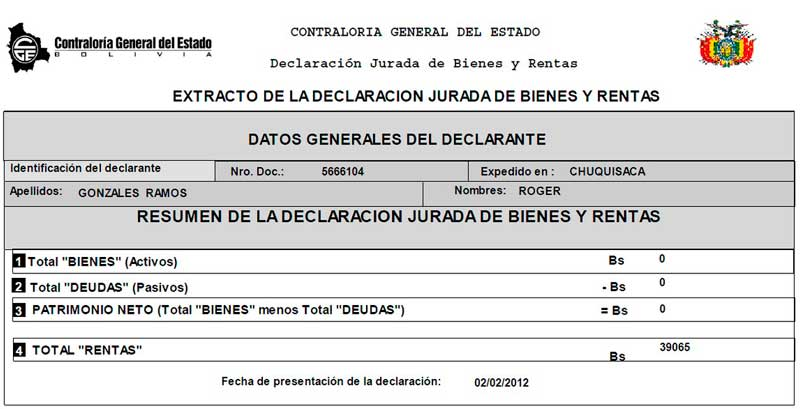
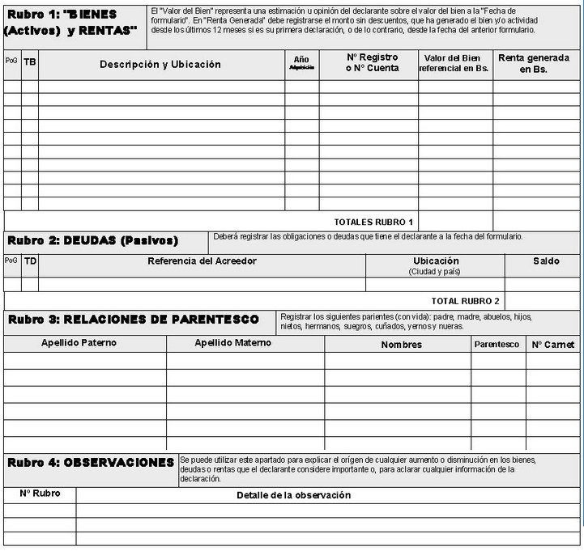

Your browser doesn't support the features required by impress.js, so you are presented with a simplified version of this presentation.
For the best experience please use the latest Chrome, Safari or Firefox browser.
PERIODISMO DE INVESTIGACIÓN
DATOS ABIERTOS
RANSPARENCIA Y SOCIEDAD CIVIL
Presionar Spacebar o Tab para empezar
¿Cómo y por qué nace
el proyecto
Enriquecimiento ilícito es que un funcionario público
“hubiere incrementado desproporcionadamente su patrimonio respecto de sus ingresos legítimos y que no pueda ser justificado”
(Art. 27 - Ley Marcelo Quiroga SC).
¿Qué es una
declaración jurada


¿Por qué es importante conocer las
declaraciones juradas
Solo se permite acceso público a un resumen de las declaraciones juradas, lo que limita la transparencia y el dato cierto del patrimonio real
El proyecto toma forma
¿Qué se tiene
- Declaraciones juradas descargadas y procesadas 114000 en pdf correspondientes a las gestiones 2006, 2010, 2012 y 2015.
- Información procesada con declaraciones del presidente, vicepresidente y de la mayoría de los ministros de la gestión 2015.
- Se encontraron en total 60 declaraciones de las gestiones 2006, 2010, 2012 y 2015.
¿Con que herramientas
trabajamos
- Python
- Google Drive
- Tabula y Tabula Extractor
- HTML 5
- JQuery
- MorrisJs
CONCLUSIONES
Desde 2009 se contempla el Derecho a la Información y la Comunicación (DIC) en la Constitución Política del Estado (Artículo 106, parágrafo I y III). Sin embargo, la aprobación de la Ley de Transparencia y Acceso a la Información se dilata tras casi seis años de revisiones y correcciones.
El país no necesita solo que tengamos una nueva ley, lo que realmente necesitamos los ciudadanos es una buena ley, con herramientas eficaces para prevenir y sancionar severamente a los servidores públicos que se enriquezcan ilícitamente.